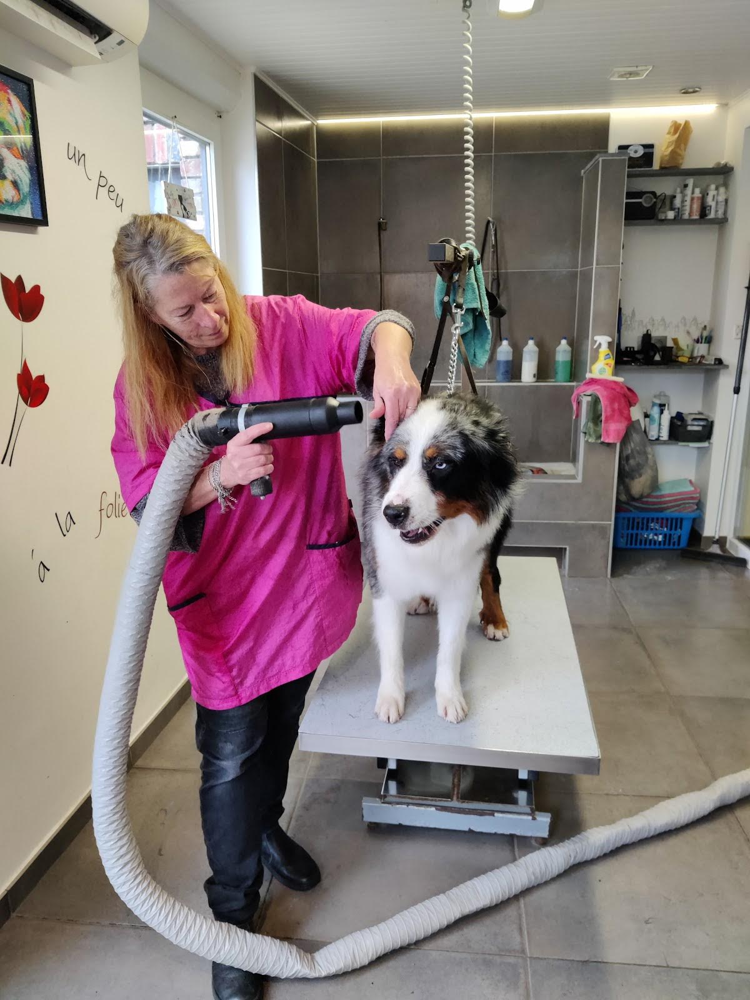
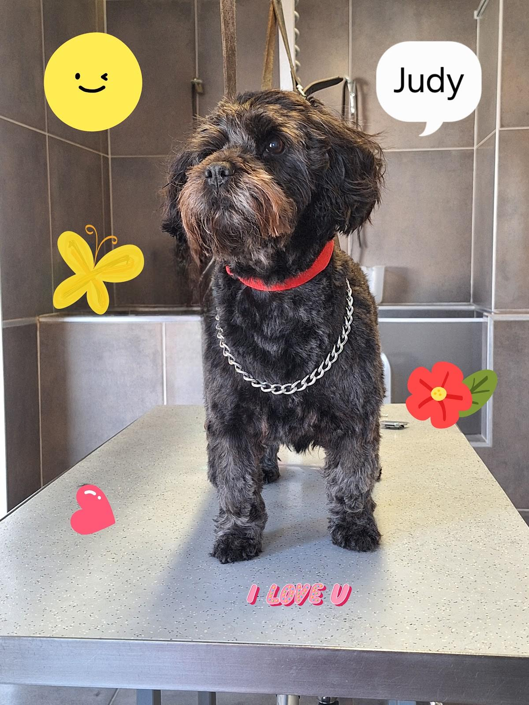
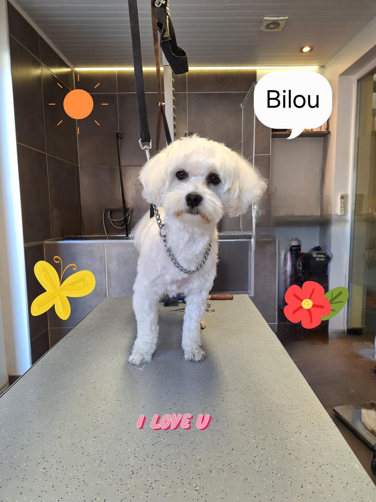
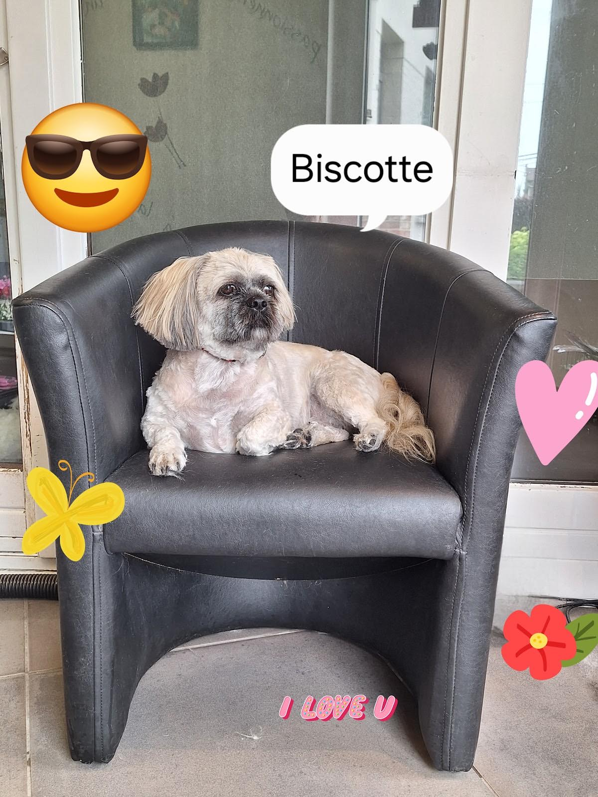
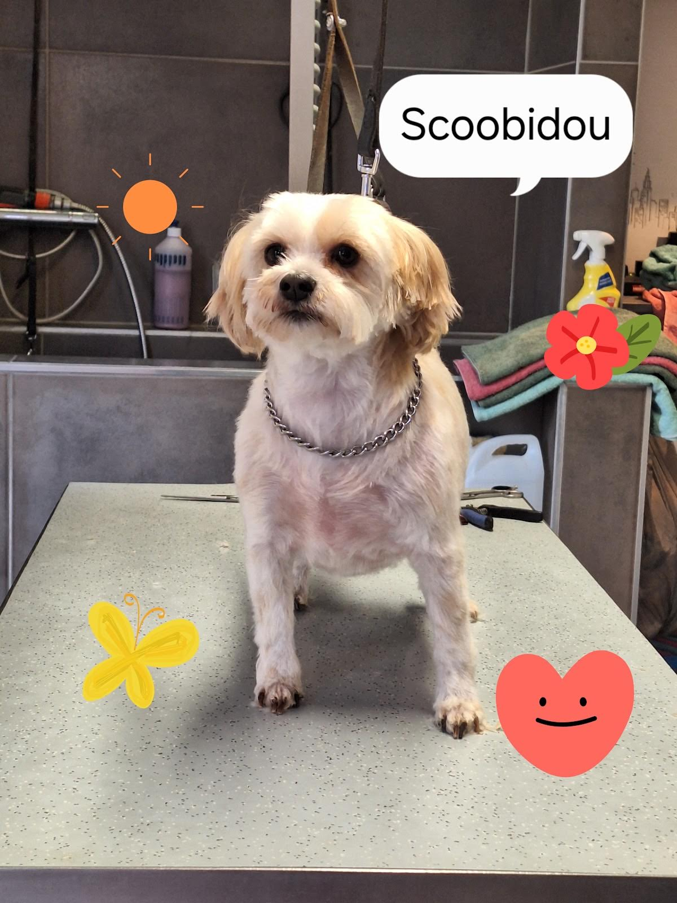
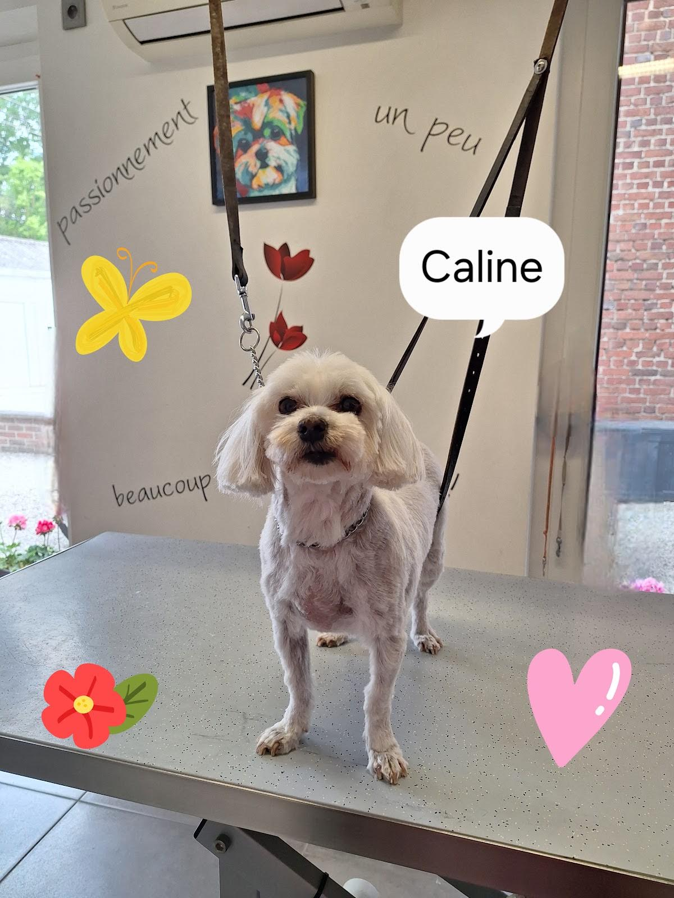
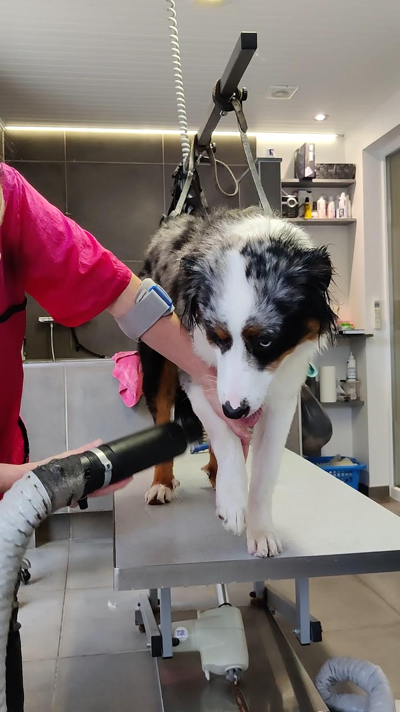
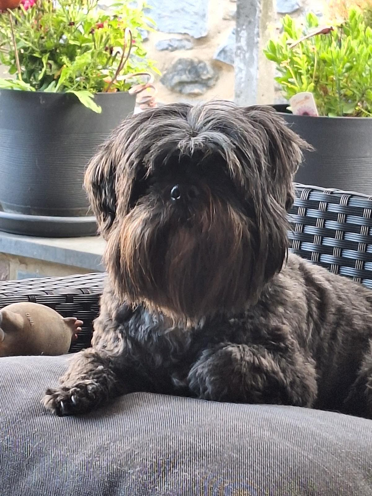

Toiletteur canin · Tournai
Patiente avec les chiens, et avec leurs maîtres.
Toilettage canin au Vieux Chemin d'Ath, à Warchin. Ceux qui y emmènent leur chien parlent de patience, de gentillesse, et d'un travail « sérieux et impeccable ».
4,9 sur 5 · 45 avis GooglePersonne adorable et patiente avec les animaux et leurs maîtres… travail sérieux et impeccable
-
5/5 · Robert F. · 2023
« je recommande très Fort Toutou Wash. Pour la qualité de son travail et la patience que cette dame a envers les animaux. Un tout grand MERCI »
-
5/5 · marie P. · 2025
« Une personne très agréable qui fait un excellent travail. Je suis très satisfaite du résultat, ma petite Tina est magnifique… »
-
5/5 · tony M. · 2022
« Je recommande à tout le monde très gentil très sympathique fait très très bien son travail encore merci à elle »

02 Le toilettage
Du bac au dernier coup de ciseaux.
Un salon carrelé, une table réglable, un souffleur, des ciseaux. Et quelqu'un qui prend le temps avec chaque chien, du petit gabarit au berger australien.
- 01
Le bain
Au bac du salon, pour commencer.
- 02
Le séchage
Au souffleur, sur la table, sans brusquer.
- 03
La coupe
Aux ciseaux, jusqu'aux finitions.
Tarif et rendez-vous : un appel suffit. 0493 98 76 03
03 Sur la table
Bilou, Judy, Biscotte, et les autres.
Après la coupe, la photo, et le prénom avec. Quelques chiens passés au salon.

JudyN° 01 
BilouN° 02 
BiscotteN° 03 
ScoobidouN° 04 
CalineN° 05 
Encore mouilléN° 06
Au mur du salon
- Un peu,
- beaucoup,
- passionnément,
- à la folie.
C'est écrit au mur du salon, en lettres noires, à côté des tulipes rouges et de la table de toilettage. Ses clients, eux, écrivent « Un tout grand MERCI ».
04 Accès
Vieux Chemin d'Ath, à Warchin.
Toutou WashVieux Chemin d'Ath 36
7548 Tournai
- À Warchin, section de Tournai.
- Parking accessible en fauteuil roulant.
- Disponibilités au téléphone, au 0493 98 76 03.
05 Rendez-vous
Pour réserver la table, le plus simple reste un appel.
0493 98 76 03 Toutou Wash sur Facebook